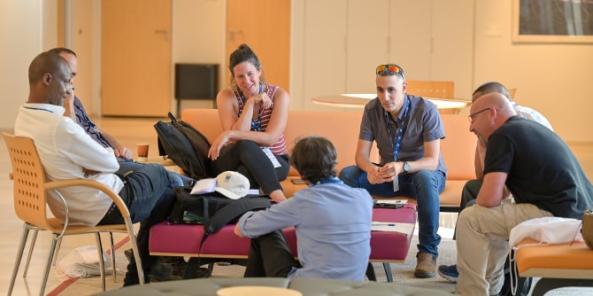

מאיה בוזו שוורץ באירוע בוגרות ובוגרים (צילום: סימנים הפקות)
מאיה בוזו שוורץ באירוע בוגרות ובוגרים (צילום: סימנים הפקות)
תוכלי לספר על יחידת בוגרות ובוגרי מנדל במתכונתה החדשה?
הקמתה של יחידת הבוגרים של קרן מנדל-ישראל הייתה מעשה חלוצי בנוף החינוכי-חברתי הישראלי. היום קשה לנו לדמיין זאת, מכיוון שקיימים ארגונים רבים של בוגרות ובוגרים, אבל כשהקרן הקימה את היחידה במתכונתה הקודמת, יחידות כאלה לא היו קיימות. זה מעיד גם על חדשנות, אבל גם על החשיבות הגדולה שהקרן תמיד ראתה בהמשך הליווי של בוגרות ובוגרים, גם אחרי סיומן של תוכניות ההכשרה.
המתכונת החדשה של היחידה באה לידי ביטוי בכמה רבדים. הבולט ביותר הוא בהגדרת כלל מסיימי התוכניות כבוגרות ובוגרים. זה שינוי אסטרטגי שהקרן עשתה, ומהותו הרצון להרחיב ולהעמיק את ההשפעה של הבוגרות והבוגרים על החברה הישראלית, ולא רק דרך תוכניות ההכשרה. כלומר, הוא מתבסס על ההבנה שהתוכנית היא צעד ראשון חשוב והכרחי, אך לא מספיק.
להחלטה הזו יש כמובן השפעה על אופן הפעולה שלנו. היחידה כמובן פועלת להמשך ההתפתחות המקצועית והאינטלקטואלית של הבוגרות והבוגרים, אבל בניגוד לעבר, ההתכווננות היא לשדה. חשוב לנו ללוות בוגרות ובוגרים בשינוי שהם מובילים בעולם, בכל מיני צורות ואופנים. כך שלצד הפיתוח המקצועי, אנו עוסקים גם במה שמכונה "ליווי יישום".
 (צילום: סימנים הפקות)
(צילום: סימנים הפקות)
מכאן נובע עוד הבדל אחד, והוא ההשקעה שלנו בבניית הקהילה. אנחנו מאמינים שהכוח העיקרי של הבוגרות והבוגרים טמון בחיבור ביניהם, ביכולת שלהם לשלב כוחות ולהוביל שינויים יחד. לכן חשוב לנו מאוד ליצור הזדמנויות רבות ומשמעותיות למפגש ביניהם, כזה שיש לו פוטנציאל לייצר שינוי מערכתי, יסודי ובר-קיימא.
השאיפה ליצור קהילה תוססת ופעילה היא גם הסיבה לכך שמצאתי לנכון שלכל תוכנית או יחידה בקרן יהיו מובילת או מוביל קהילה. מובילי הקהילה וחברי הסגל של התוכניות מכירים את הבוגרות והבוגרים שלהם באופן אישי, את הצרכים ואת הפוטנציאל של החיבורים ביניהם. אך לא פחות חשוב מכך, גם את שדה הפעולה הספציפי שבו הבוגרים פועלים (אזור הנגב או החינוך בלתי פורמלי, למשל) ואת האתגרים שעמם הם מתמודדים. העבודה שלהם ושלנו יחד מאפשרת לראות תמונה שלמה וליצור מענים רלוונטיים.

(צילום: סימנים הפקות)
כיצד אתם לומדים על הצרכים של הבוגרים והבוגרות?
זאת שאלה שמעסיקה אותנו רבות. אנחנו כל הזמן לומדים אותם ואת הצרכים שלהם, לפעמים באופן יזום, אבל רוב הזמן תוך כדי תנועה. ממש בתחילת הדרך ערכנו ראיונות עומק עם יותר מ-150 בוגרות ובוגרים. למדנו מהם המון על האופן שבו הם תופסים את מנדל, על הצרכים המקצועיים שלהם וגם על מה שהיו שמחים לעשות יחד עם חברות וחברי הקהילה. לפני כשנה קיימנו כמה אירועים של שולחנות עגולים, שאליהם הגיעו 170 בוגרות ובוגרים. שם השמענו מחשבות ורעיונות ראשוניים על גיבוש תפיסת העבודה של היחידה, ושם התחלנו ממש לראות את פוטנציאל החיבורים ביניהם.
לצד זאת, נדמה לי שהלמידה המשמעותית ביותר מתרחשת באופן בלתי פורמלי ותוך כדי העבודה. היחידה החלה לעבוד עם הבוגרים והבוגרות בינואר 2022, ומאז פגשנו יותר מ- 1000 בוגרות ובוגרים בתהליכי למידה ועשייה שונים שקיימנו. אנחנו לומדים להכיר את הפנים שמאחורי השמות, אנחנו משוחחים איתם ושומעים אותם במפגש היומיומי שלנו איתם. גם כאן, למובילות ומובילי הקהילה יש תפקיד מרכזי בהנכחת הקול של הבוגרות והבוגרים. לאחרונה נפתחה גם קבוצת פייסבוק סגורה לבוגרות ובוגרים, וגם זה ערוץ חשוב שדרכו אנחנו שומעים אותם ולומדים.
 (צילום: סימנים הפקות)
(צילום: סימנים הפקות)
כיצד יוצרים רישות אפקטיבי בין בוגרים רבים כל כך ומתוכניות שונות כל כך?
זאת שאלה טובה. מכיוון שהקהילה שלנו באמת גדולה ומאוד הטרוגנית, ברור שנדרשת כאן פעולה חכמה. גם בהיבט הזה אנחנו עדיין בתהליך של למידה ושיפור. יש לנו כמה אסטרטגיות פעולה כרגע: בימים אלו ממש אנו משיקים את "הרשת המקצועית" – מאגר פנימי של בוגרות ובוגרים שבו הם יכולים לחפש זה את זה. רשומים בו כבר קרוב ל-1,200 איש ואישה, ואפשר לבצע שם חיפוש לפי פרטים אישיים, אבל גם לפי תחומי עניין ומומחיות.
אסטרטגיה נוספת שלנו היא גיוון בתהליכי הלמידה. למעט במקרים שבהם יש ערך מקצועי לרקע משותף, הנטייה שלנו היא ליצור קבוצות הטרוגניות שכוללות בוגרות ובוגרים מתוכניות שונות ומרקעים שונים. בתהליכים שהתרחשו השנה אפשר היה ממש לחוש את הערך העצום שיש במפגש הזה בין אנשים שהם אמנם זרים, אבל חולקים חוויות דומות ומהר מאוד מגשרים על הפערים ומגלים שהם דוברים שפה משותפת. מהבחינה הזאת, הרישות מתרחש באופן טבעי. בחודשים הקרובים נשיק גם את "המנדליסט" – מגזין מקוון של בוגרות ובוגרים שייתן במה לעשייה שלהם. זאת דרך טובה נוספת של חברי הקהילה להכיר זה את זה.
 (צילום: קרן מנדל-ישראל)
(צילום: קרן מנדל-ישראל)
אילו סוגים של ליווי ופעילויות אתם מציעים?
תפיסת פיתוח המנהיגות שלנו מורכבת מארבעה מנופים: התמקצעות בהובלת שינוי, המשך הפיתוח האינטלקטואלי, ליווי פעולות ופיתוח הקהילה. אנחנו מציעים תהליכים שונים שמקדמים את המנופים האלו בדרכים שונות.
למשל, בתהליכים של פיתוח אינטלקטואלי קיימנו לאורך השנה כמה מפגשי לימוד חד-יומיים שעסקו בסוגיות של חברה וחינוך, כגון פרטיות במרחב הציבורי או סוגיית השנאה. היו גם כמה תהליכים שהעבירו אנשי הסגל של הקרן, כל אחד מהם בתחומי המומחיות שלו. בזירת ההתמקצעות בהובלת שינוי הצענו תהליכים משני סוגים – כאלו שהעמיקו את הלמידה וההתנסות בתאוריות להובלת שינוי (למשל: מנהיגות אדפטיבית, חסינות לשינוי, מודל יו), ותהליכים שהתמקדו בפיתוח מיומנות ספציפית (למשל: ניהול מבוסס נתונים, עמידה מול קהל).
לצד אלו, בתחום ליווי הפעולות נדמה לי שעשינו קפיצת דרך חשובה בגיבוש אופני הפעולה שלנו. אזכיר בהקשר הזה את קבוצות המעשה. קבוצת מעשה היא התארגנות של בוגרות ובוגרים סביב נושא שבוער להם להוביל בו שינוי, ואנחנו מספקים להם רק את המסגרת ואת הליווי. השנה קמו כמה קבוצות כאלו, בנושאים שהם בראש סדר היום הציבורי, כגון הפחתת האלימות בחברה הערבית ושיפור תנאי ההעסקה של עובדי ועובדות הוראה. הקבוצות האלה מגלמות באופן המזוקק ביותר את תפיסת פיתוח המנהיגות של היחידה. בקבוצת המעשה אנחנו רואים בוגרות ובוגרים שמתגייסים יחד להוביל שינוי בתחומים שלפעמים הם ממש על שולחן העבודה שלהם, ולפעמים משום שהם מרגישים שאין להם ברירה והם מוכרחים לעשות מעשה.
באזור אחר של ליווי פעולות, הקמנו השנה מאיץ ליזמות חינוכית-חברתית, שמעודד בוגרות ובוגרים להפוך רעיון למעשה בעולם. זו תוכנית מאוד אינטנסיבית, אבל מי שמתמסר לה זוכה למעטפת ליווי מקצועית ותומכת עד לשלב שבו יש מיזם שמוכן לצאת לעולם.
 (צילום: סימנים הפקות)
(צילום: סימנים הפקות)
תוכלי לתת דוגמה לפעילות של בוגרים שהייתה חשובה במיוחד או מוצלחת במיוחד בעינייך?
בעיניי, הפעולות החשובות ביותר הן הפעולות שבוגרים ובוגרות יזמו והובילו, ולאו דווקא אלו שאנחנו חשבנו עליהן כיחידה. בפעולות האלו אני רואה את התרומה הגדולה ביותר שלנו. היו כמה וכמה פעולות כאלו השנה, אחת מהן, למשל, היא קבוצה של חרדים וחרדיות שהתכנסו כדי לחשוב יחד על הנגשת תחום בריאות הנפש לקהילות החרדיות. מפגש חשוב אחר התקיים בבאקה אל גרביה. קבוצה של בוגרות ובוגרים ערבים נפגשו, ביוזמה ובהובלה של בוגרת שלנו, כדי ללמוד לעומק את תוכנית החומש לחברה הערבית ואת האופן שבו אפשר למצות את משאביה בצורה מיטבית.
אנחנו עדיין ממש בתחילת הדרך ועושים את צעדינו הראשונים. לא אגזים אם אומר שאנחנו לומדים כל יום משהו, ולא פעם ולא פעמיים קרה ששינינו תוכניות, או הגדרנו אותן מחדש, או חשבנו שהן אינן בשלות דיין והחזרנו אותן לשולחן השרטוטים. יש לנו עוד המון מה ללמוד על הבוגרים והבוגרות בכלל, ועל האופן המיטבי שבו אנחנו יכולים לעבוד איתם בפרט.
בתפיסת העתיד שלנו, אנחנו שואפים להגיע בתוך שנתיים-שלוש למצב שלצד המשך הפיתוח המקצועי והאישי, חלק ניכר מהפעולות שלנו יצמחו "מלמטה", כלומר מתנועות ומיוזמות של בוגרים ובוגרות שחשים אי-נחת מתמדת מהמצב הקיים, שיש להם עמדה ביקורתית החיונית לעשייה ולשינוי במקום סבוך כמו מדינת ישראל, ורואים בנו, יחידת בוגרות ובוגרי מנדל, יחידה המאפשרת להם מעבדה ומרחב מקצועי שבו יוכלו לפתח, להעמיק ולהוביל, יחד עם שותפים, שינויים המיטיבים עם החברה בישראל. זה החלק שהכי מסקרן אותי. לראות לאן הדבר הזה יכול להתפתח...
 (צילום: סימנים הפקות)
(צילום: סימנים הפקות)
{kind=link}